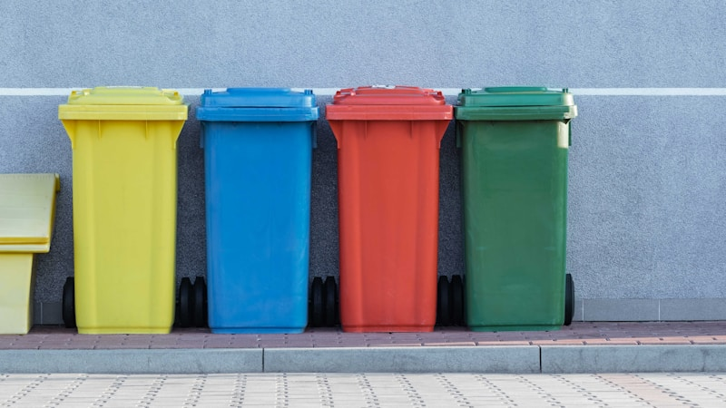

ПроектыЭкология
Стартап создал биоразлагаемую упаковку из водорослей
Молодая команда разработала упаковочный материал, который полностью разлагается за 4 недели и не вредит океанам.
Каждую минуту в мировой океан попадает около 15 тонн пластикового мусора. Большая его часть — упаковка: пакеты, контейнеры, плёнка. Стартап SeaWrap из Лиссабона решил изменить эту статистику с помощью самой природы — водорослей.
Основательница компании Мария Силва занималась морской биологией, когда заметила, насколько быстро водоросли разрастаются в прибрежных зонах. «Я смотрела на эти тонны биомассы и думала: это же готовое сырьё, которое никто не использует», — вспоминает она. В 2022 году вместе с инженером-материаловедом Андреем Коста она основала SeaWrap.
Технология работает следующим образом: бурые водоросли вида Laminaria hyperborea собирают в открытом море, затем высушивают и измельчают до состояния порошка. Смешивая его с растительными полимерами и природными пластификаторами, команда получает гибкий листовой материал. По прочности он сравним с традиционным пищевым пластиком, а по прозрачности — с целлофаном.
В цифрах
Ежегодно в мировой океан попадает более 8 миллионов тонн пластика. Упаковка составляет около 40% всего пластикового мусора. Биоразлагаемый материал SeaWrap разлагается в морской воде за 4–6 недель, не образуя микропластика.
Главное отличие от обычной упаковки — скорость разложения. В морской воде материал полностью распадается за 4–6 недель, в почве — за 3–4 месяца. При этом не образует микропластика: продукты распада безопасны для морских организмов и служат питательной средой для бактерий.
Сейчас команда из 18 человек производит несколько форматов упаковки: плёнку для продуктов питания, контейнеры для фастфуда и пакеты для доставки. Пилотные партии уже тестируют три сети супермаркетов в Португалии и Испании. По итогам первых шести месяцев использования возвраты по причине нарушения упаковки не превысили 1,2% — это лучший показатель среди биоразлагаемых альтернатив на рынке.
Себестоимость производства пока выше, чем у обычного пластика, примерно в 2,3 раза. Однако при выходе на масштаб в 10 тысяч тонн в год (текущая мощность — 800 тонн) экономика, по расчётам компании, сравняется. Европейский налог на пластик, введённый в 2021 году, уже сократил ценовой разрыв.
В феврале 2026 года SeaWrap закрыл раунд финансирования серии A на 12 миллионов евро при участии фондов EIT Climate-KIC и Breakthrough Energy Ventures. Средства пойдут на строительство второго завода в Марокко — поближе к основным районам промысла водорослей.
Проект также решает социальную задачу: SeaWrap сотрудничает с рыболовецкими кооперативами вдоль атлантического побережья Марокко и Португалии. Для них сбор водорослей стал дополнительным источником дохода в межсезонье. На данный момент в программе участвует 47 семей.
Эксперты отрасли осторожно оптимистичны. Биоразлагаемая упаковка в целом занимает менее 1% мирового рынка, но темпы роста сегмента — около 14% в год — говорят о реальном запросе. Конкуренты SeaWrap работают с кукурузным крахмалом и сахарным тростником, однако у водорослей есть важное преимущество: для их выращивания не нужны пахотные земли и пресная вода.
Почему это важно
Водоросли растут без пахотных земель, пресной воды и удобрений, поглощая CO₂ из воды. Это делает их идеальным сырьём для устойчивого производства: углеродный след материала SeaWrap на 87% ниже, чем у традиционного полиэтилена.
«Мы не претендуем на то, что заменим весь пластик в мире», — говорит Мария Силва. «Но если нам удастся переключить хотя бы 5% упаковочного рынка, это означает сотни тысяч тонн меньше пластика в океане каждый год. Мне кажется, это того стоит».